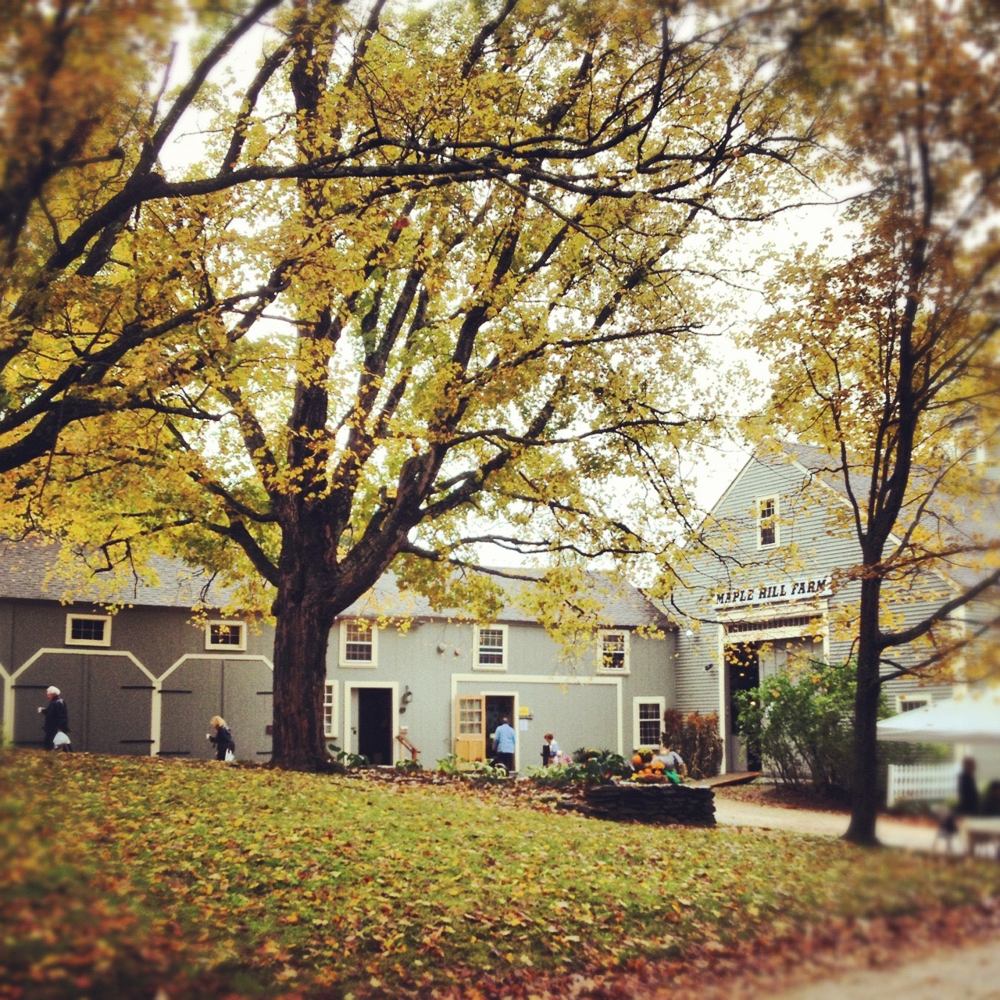
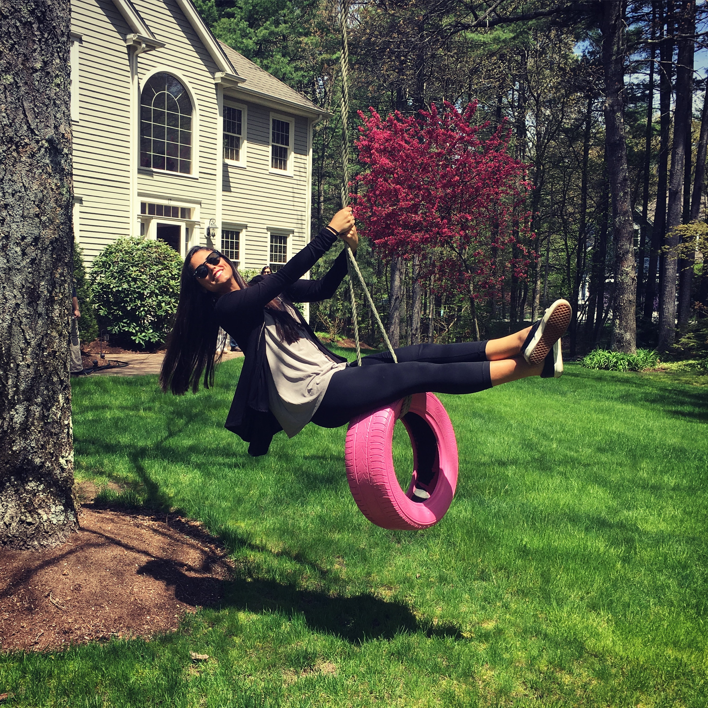

Hollis, New Hampshire
 My name is Sydney Hawekotte and I am a senior at University of Miami. Despite all of the important skills I have learned in college, living away from home has given me something deeper: a newfound appreciation for the town I grew up in, Hollis, New Hampshire. The 603 is located on the New Hampshire and Massachusetts border, a mere hour from Boston. Hollis is also conveniently located a short drive from New Hampshire's 18 mile coast of beaches and the lakes region with plenty of lakes and mountains for hiking, skiing, and exploring nature. Many people I have met in Florida tell me they’re from a small town. When I tell them that my town had one stop light, acres of farmland, and one Dunkin' Donuts disguised to fit in with its historical surroundings, we can both agree that my town is probably smaller. But, Hollis's small town quirks make it truly unique, and I cannot imagine growing up anywhere else. Whether you are thinking about moving to this quaint town or simply looking to learn more, navigate the site to learn more about the wonderful place I have been able to call home!